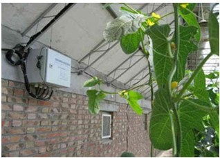
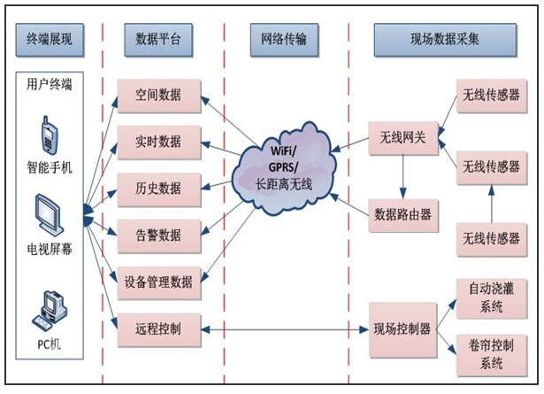
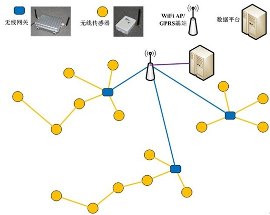
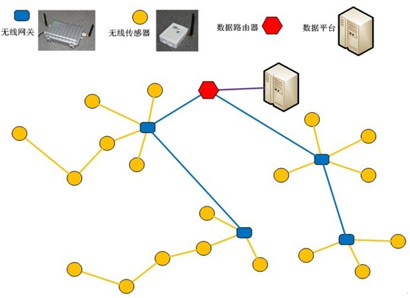

解决方案
解决方案
|

|
农业大棚智能监控系统 |
农业大棚智能监控系统通过实时采集农业大棚内空气温度、湿度、光照、土壤温度、土壤水分等环境参数，根据农作
物生长需要进行实时智能决策，并自动开启或者关闭指定的环境调节设备。通过该系统的部署实施，可以为农业生态信息
自动监测、对设施进行自动控制和智能化管理提供科学依据和有效手段。大棚监控及智能控制解决方案是通过可在大棚内
灵活部署的各类无线传感器和网络传输设备，对农作物温室内的温度，湿度、光照、土壤温度、土壤含水量、CO2浓度等
与农作物生长密切相关环境参数进行实时采集，在数据服务器上对实时监测数据进行存储和智能分析与决策，并自动开启
或者关闭指定设备(如远程控制浇灌、开关卷帘等)。
在每个智能农业大棚内部署无线空气温湿度传感器、无线土壤温度传感器、无线土壤含水量传感器、无线光照度传感
器、无线CO2传感器等，分别用来监测大棚内空气温湿度、土壤温度、土壤水分、光照度、CO2浓度等环境参数。为了方
便部署和调整位置，所有传感器均应采用电池供电、无线数据传输。大棚内仅需在少量固定位置提供交流220V市电（如：
风机、水泵、加热器、电动卷帘）。每个农业大棚园区部署1套采集传输设备（包含路由节点、长距离无线网关节点、Wi
-Fi无线网关等），用来覆盖整个园区的所有农业大棚，传输园区内各农业大棚的传感器数据、设备控制指令数据等到Inte-
rnet上与平台服务器交互。在每个需要智能控制功能的大棚内安装智能控制设备（包含一体化控制器、扩展控制配电箱、
电磁阀、电源转换适配设备等），用来接受控制指令、响应控制执行设备。实现对大棚内的电动卷帘、智能喷水、智能通
风等行为的实现。
（1）总体架构：系统的总体架构分为现场数据采集、网络传输、智能数据处理平台和远程控制四部分。

（2）系统有两种典型配置结构：
两层网络，系统由两类点构成：
(1) 无线传感器节点，包括无线空气温湿度传感器、无线土壤温度传感器、无线土壤含水量传感器、无线光照
度传感器、无线CO2传感器等；
(2) 无线网关节点，包括Wi-Fi无线网关或GPRS无线网关。
该结构的拓扑结构如下图所示：

该结构适用于园区已经有Wi-Fi局域网覆盖，或是可以采用GPRS直接上传数据的场景。在此结构中，只需要在合适
的区域部署无线网关，即可实现传感器数据的采集和上传。
三层网络，系统由三类点构成：
(1) 无线传感器节点，包括无线空气温湿度传感器、无线土壤温度传感器、无线土壤含水量传感器、无线光照
度传感器、无线CO2传感器等；
(2) 无线网关节点；
(3) 数据路由器。
该结构的拓扑结构如下图所示：

该结构适用于园区没有Wi-Fi局域网覆盖，也不准备采用GPRS直接上传数据的场景。在此结构中，需要部署数据路
由节点和无线网关，无线网关与数据路由节点之间以长距离无线通信方式进行数据的交换，在区域较大，节点间通
信距离不足时，无线网关还可以相互之间进行自动数据中继，扩大监控网络的覆盖范围。
（3）传感信息采集：在监控网络中，无线空气温湿度传感器、无线土壤温度传感器、无线土壤含水量传感器、无线光照
度传感器、无线CO2传感器等传感器均支持低功耗运行，可使用廉价的干电池供电长期工作。同时，所有的无线传
感器节点均运行SleepTree低功耗多跳自组网协议，可为其它节点提供数据的自动中继转发，以扩大监测网络的覆盖
范围,增加部署灵活性。SleepTree低功耗多跳自组网协议是在IEEE802.15.4协议的基础上建立的，无线通信的频率
选择可以是2.4GHz或780MHz。传感器数据通过SleepTree协议传送到无线网关节点上，无线网关节点再经过数据路
由节点或直接将传感器数据发送到数据平台的服务器上。用户可以通过有线网络/无线网络访问数据平台，实时监测大
棚现场的传感器参数，控制大棚现场的相关设备。
 京公网安备 11010802033138号|京ICP备12010723号
京公网安备 11010802033138号|京ICP备12010723号